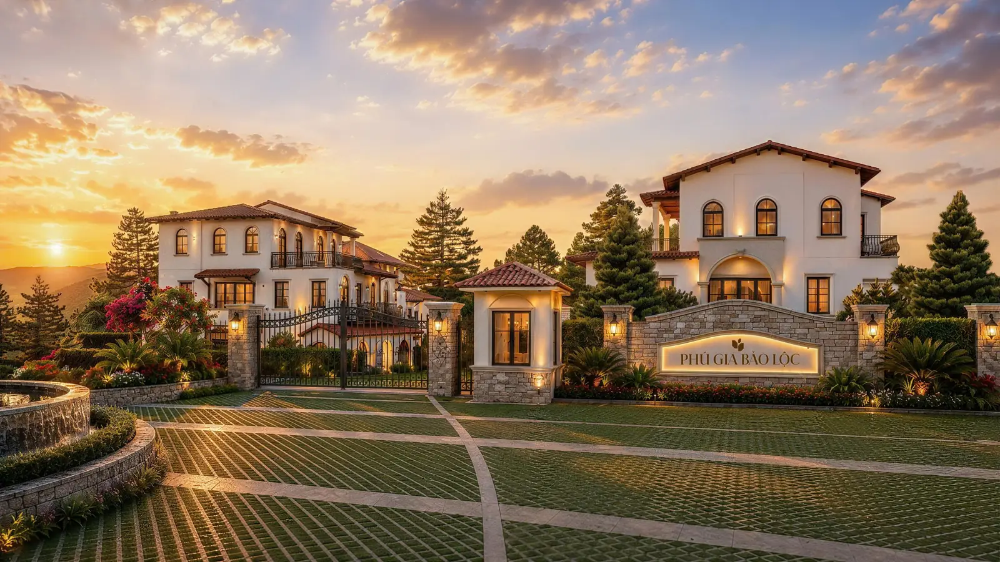
Dự án Khu biệt thựPhú Gia Bảo LộcMột không gian sống riêng giữa Bảo Lộc.
Khu compound biệt lập giữa Bảo Lộc nguyên sơ, nơi thiên nhiên cao nguyên, không gian riêng tư và một cộng đồng tinh hoa cùng hội tụ.
BẢNG GIÁ & MẶT BẰNG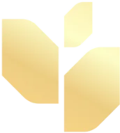
Tổng quan dự án Phú Gia Bảo Lộc
Trên quy mô khoảng 9 ha với 357 sản phẩm, Khu biệt thự Phú Gia Bảo Lộc được định vị là khu compound biệt lập tại Bảo Lộc, gồm hai phân khu Gia An và Phú Quý, kết hợp không gian ở với trải nghiệm nghỉ dưỡng ngay trong nội khu.
| Tên thương mại | Khu biệt thự Phú Gia Bảo LộcTên pháp lý: Khu Dân Cư Nông Thôn Mới Đô Thị Xanh |
|---|---|
| Chủ đầu tư | Công ty Cổ phần Đầu tư ERAS Đà Lạt / Cao Nguyên LandĐồng hành phát triển: Lộc Phát Land |
| Vị trí | Mặt tiền Quốc lộ 20, số 765 Trần Phú, Phường 3 Bảo Lộc, tỉnh Lâm Đồng |
| Quy mô | Khoảng 9,1 ha (91.248 m²)2 phân khu: Gia An và Phú Quý |
| Số lượng sản phẩm | 357 sản phẩmBiệt thự, shophouse, nhà liên kế phố và nhà vườn |
| Diện tích | Từ 100 m² đến hơn 400 m²Liên kế 100 – 140 m² · Song lập 140 – 200 m² · Đơn lập trên 200 m² |
| Pháp lý | Quy hoạch chi tiết 1/500, sổ riêng từng nền |
| Giá bán tham khảo | Từ 26,5 triệu đồng/m²Tham chiếu tháng 10/2026, tùy diện tích, vị trí và giỏ hàng |
| Phân phối | ERA Vietnam – đơn vị phân phối độc quyền |
Dự án không cố thay đổi nét đặc trưng vốn có ở Bảo Lộc, mà đưa thiên nhiên, khoảng thở và khí hậu cao nguyên vào một môi trường sống được quy hoạch bài bản hơn – để “đến Bảo Lộc để nghỉ” tiến thêm một bước thành “có một nơi để trở về tại Bảo Lộc”.
Vị trí liên kết vùng
Thời gian dự kiến khi hành lang cao tốc Dầu Giây – Tân Phú – Bảo Lộc hoàn thiện và đưa vào khai thác theo kế hoạch năm 2027 – không phải thời gian di chuyển hiện tại.
Kết nối quanh dự án
- Quốc lộ 20 (đường Trần Phú)Trục chính TP.HCM – Bảo Lộc – Đà Lạt, kết nối trung tâm thành phố
- Nút giao cao tốc Dầu Giây – Liên KhươngHành lang cao tốc hướng TP.HCM và Đà Lạt
- Trung tâm Bảo LộcChợ, trường học, bệnh viện, Co.opmart, trung tâm thương mại Vincom
- Hồ Nam Phương · thác DambriĐiểm đến du lịch đặc trưng của Bảo Lộc
- Đồi chè · núi Đại BìnhCảnh quan cao nguyên quanh Bảo Lộc
Nơi để thường xuyên trở về
Vị trí dự án Phú Gia Bảo Lộc nằm ngay mặt tiền Quốc lộ 20, Phường 3 Bảo Lộc, thuận tiện kết nối trung tâm thành phố cùng hệ thống chợ, trường học, bệnh viện, trung tâm thương mại Vincom và những điểm đến du lịch đặc trưng như Hồ Nam Phương, thác Dambri hay đồi chè quanh Bảo Lộc.
Khi hành lang cao tốc Dầu Giây – Tân Phú – Bảo Lộc hoàn thiện và đưa vào khai thác theo kế hoạch vào năm 2027, thời gian di chuyển được kỳ vọng rút xuống khoảng 2,5 giờ, qua cung đường “cao tốc xuyên rừng” trên hành trình về với vùng cao nguyên.
Khi khoảng cách được rút ngắn, Bảo Lộc có cơ hội trở thành nơi để thường xuyên trở về, thay vì chỉ thỉnh thoảng ghé đến.
Nhưng đến nhanh hơn mới là bước đầu – điều khiến người ta muốn ở lại nằm ở trải nghiệm sống mỗi ngày tại Phú Gia Bảo Lộc.
Tiện ích Phú Gia Bảo Lộc 27 “điểm chạm” trong khu compound, để cuộc sống mỗi ngày không chỉ diễn ra bên trong mỗi ngôi nhà
Giá trị của tiện ích Phú Gia Bảo Lộc nằm ở cách những không gian ấy mở rộng đời sống của cả gia đình ra bên ngoài ngôi nhà. Trong một khu compound được quy hoạch với hệ thống an ninh 24/7, từ trẻ nhỏ, cha mẹ đến ông bà đều có thể tìm thấy một nhịp sinh hoạt phù hợp ngay trong nội khu.
- Buổi sángCho ông bàMột vòng tản bộ qua đồi thông, Japanese Garden, Mimosa Garden hay vườn rau hữu cơ.
- Giờ chơiCho trẻ nhỏVườn mê cung, khu vận động, khu vui chơi trẻ em và các khu cảnh quan thay vì quanh quẩn trong nhà.
- Sau giờ làmCho cha mẹSân bóng rổ, khu thể thao đa năng, cà phê hoặc những khoảng xanh để thư giãn.
- Cuối ngàyCho cả nhàGặp nhau tại Cà phê Đôi Dép, khu BBQ, F&B hoặc không gian cộng đồng – cuối tuần không cần đi xa.
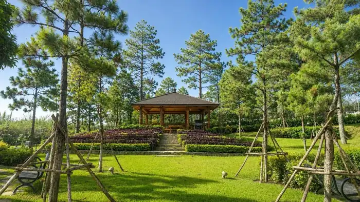
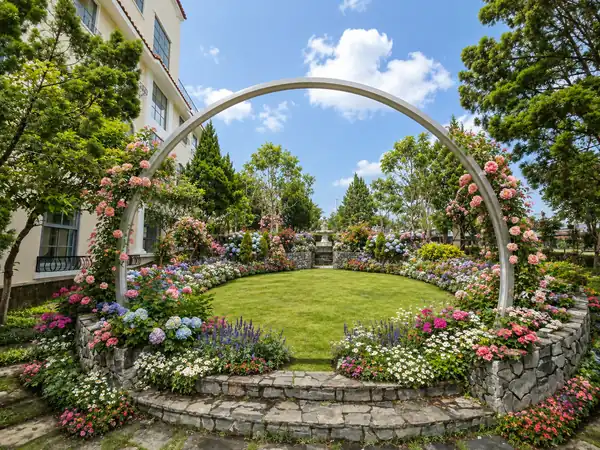
Phân khu Phú Quý 16 tiện ích
- 1Cà phê Đôi Dép
- 2Sales Gallery
- 3Bãi đậu xe
- 4Trạm sạc
- 5Cupid Garden
- 6Khu BBQ
- 7Khu vui chơi trẻ em
- 8Vườn mê cung
- 9Trường mẫu giáo
- 10Vườn cây đặc hữu
- 11Khu thể thao đa năng
- 12Khu tiện ích cộng đồng
- 13Trung tâm chăm sóc sức khỏe
- 14Nhà vệ sinh công cộng
- 15Vườn cảnh quan
- 16An ninh 24/7
Phân khu Gia An 11 tiện ích
- 1Fern Garden
- 2Rose Garden
- 3Sân bóng rổ
- 4Japanese Garden
- 5Nhà vệ sinh công cộng
- 6Đồi thông
- 7Khu BBQ
- 8Tiện ích F&B
- 9Mimosa Garden
- 10Vườn rau hữu cơ
- 11An ninh 24/7
Cuối tuần không nhất thiết phải lên kế hoạch cho một chuyến đi xa – từ vận động, vui chơi, thư giãn đến những bữa ăn gia đình đều có thể diễn ra ngay bên trong Phú Gia.
Mặt bằng & sản phẩm Phú Gia Bảo Lộc Chọn diện tích theo nhu cầu trải nghiệm riêng của từng gia đình
Khu biệt thự Phú Gia Bảo Lộc được quy hoạch thành hai phân khu Gia An và Phú Quý với ba nhóm sản phẩm.
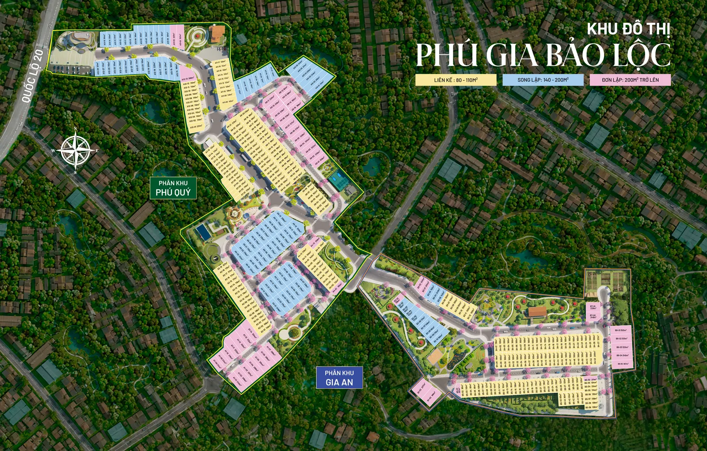
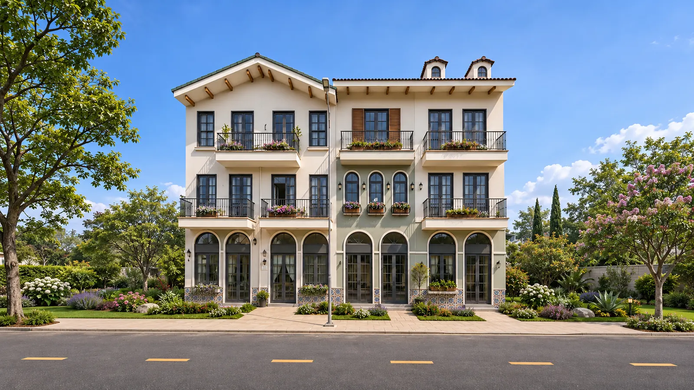
Liên kế
100 – 140 m²Diện tích nền
Diện tích vừa phải, phù hợp với nhiều gia đình.
Hình ảnh mẫu nhà mang tính chất minh họa. Sản phẩm giao dịch là nền có quyền sở hữu riêng, xây dựng theo quy hoạch và quy định của dự án.
Nhận giá nền Liên kế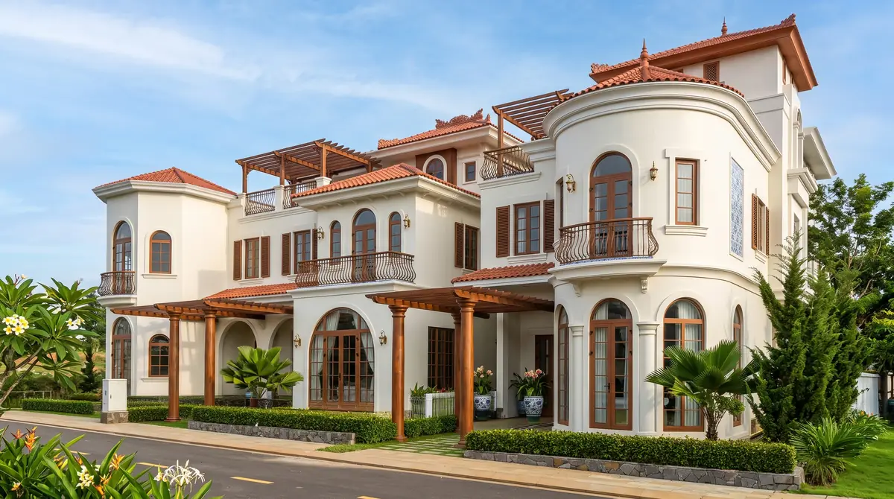
Song lập
140 – 200 m²Diện tích nền
Mở rộng thêm không gian sân vườn, thích hợp gia đình đa thế hệ.
Hình ảnh mẫu nhà mang tính chất minh họa. Sản phẩm giao dịch là nền có quyền sở hữu riêng, xây dựng theo quy hoạch và quy định của dự án.
Nhận giá nền Song lập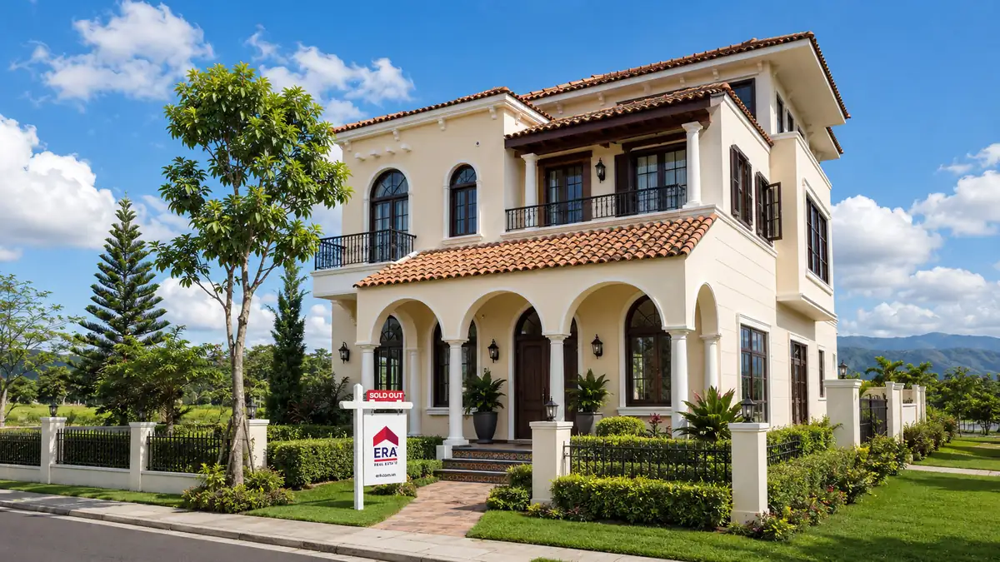
Đơn lập
Trên 200 m²Diện tích nền
Diện tích lớn và mức độ riêng tư cao, mang giá trị tích sản và di sản truyền đời.
Hình ảnh mẫu nhà mang tính chất minh họa. Sản phẩm giao dịch là nền có quyền sở hữu riêng, xây dựng theo quy hoạch và quy định của dự án.
Nhận giá nền Đơn lậpHiểu đúng sản phẩm & pháp lý
Với những ai đang tìm kiếm đất nền Phú Gia Bảo Lộc, nhà phố Phú Gia Bảo Lộc, shophouse Phú Gia Bảo Lộc hay biệt thự Phú Gia Bảo Lộc, cần hiểu đúng rằng sản phẩm giao dịch tại dự án là nền biệt thự có quyền sở hữu riêng, để chủ nhân phát triển không gian ở theo quy hoạch và quy định, thay vì mặc định toàn bộ là nhà đã xây hoàn thiện.
Bên cạnh mặt bằng và quy hoạch, pháp lý Phú Gia Bảo Lộc là lớp giá trị quan trọng trước khi nói đến tiềm năng dài hạn. Dự án có quy hoạch chi tiết 1/500 và sổ riêng từng nền, giúp quyền sở hữu được xác lập rõ ràng và có giá trị truyền đời.
Với khách hàng đang tìm hiểu sổ hồng Phú Gia Bảo Lộc, hồ sơ pháp lý cụ thể của nền lựa chọn nên được kiểm tra trực tiếp trước khi giao dịch. Nếu quan tâm tiến độ Phú Gia Bảo Lộc 2026, khách hàng có thể đăng ký tham quan để kiểm chứng tiến độ xây dựng, cảnh quan, hạ tầng và nhà mẫu tại thời điểm thực tế.
Khi đã biết mình sở hữu gì, câu hỏi tiếp theo sẽ rất thực tế: cần chuẩn bị dòng tiền như thế nào?
Phương thức thanh toán Phú Gia Bảo Lộc Nhịp tài chính phù hợp với từng gia đình · tháng 10/2026
-
Lựa chọn 1
Thanh toán bằng vốn tự có
- 100 triệuĐặt cọc lần đầu
- 15 thángTiếp theo, chia thành nhiều đợt
- 5%Cuối cùng, thanh toán khi nhận sổ hồng
-
Lựa chọn 2
Vay ngân hàng
- 30%Khách hàng thanh toán theo tiến độ
- 65%Ngân hàng giải ngân · hỗ trợ lãi suất 0% và ân hạn gốc 24 tháng
- 5%Còn lại, thanh toán khi nhận sổ hồng
-
Lựa chọn 3
Thanh toán nhanh
Chiết khấu đến 10%
Theo chính sách hiện hành của chủ đầu tư tại thời điểm giao dịch.
Phương thức thanh toán áp dụng tháng 10/2026 theo công bố của chủ đầu tư, có thể thay đổi theo từng thời điểm. Điều kiện vay, hỗ trợ lãi suất theo ngân hàng liên kết. Bảng tính dòng tiền theo từng nền do chuyên viên ERA cung cấp.
Nhận bảng tính dòng tiền theo nền
Chương trình ưu đãi Phú Gia Bảo Lộc Quyền lợi và chính sách hậu mãi không dừng lại ở thời điểm ký hợp đồng
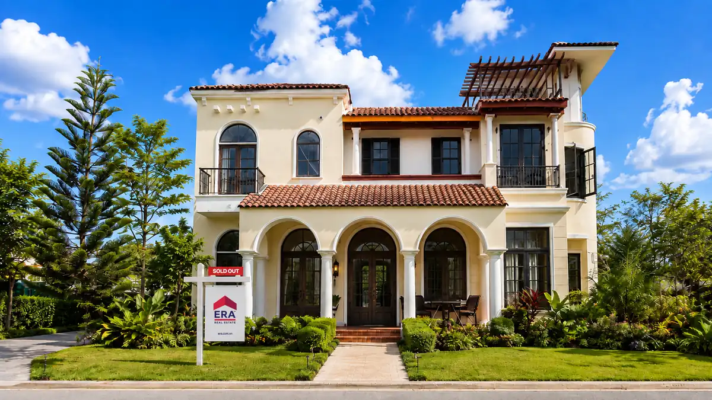
Tùy chương trình áp dụng tại từng thời điểm, khách hàng có thể nhận thêm:
- Thẻ thành viên Đôi Dép VIP
- Voucher nghỉ dưỡng
- Bộ bản vẽ thiết kế mẫu nhà
- Hỗ trợ điều chỉnh thiết kế theo nhu cầu
Bộ quà tặng cây cho sân vườn
- Thông
- Bơ
- Cà phê
- Phát tài
- Chè cổ thụ
Một chi tiết mang nhiều tinh thần Bảo Lộc: thay vì một món quà chỉ xuất hiện khi giao dịch, những loại cây ấy có thể tiếp tục lớn lên cùng chính không gian sống của chủ nhân.
Ưu đãi tạo thêm lợi thế cho thời điểm mua. Nhưng với một tài sản được chọn để sở hữu lâu dài, câu hỏi cần nhìn xa hơn vẫn là: ai đứng phía sau quá trình phát triển dự án ấy?
Chủ đầu tư Eras Đà Lạt Kiến tạo bất động sản từ nhu cầu thực, không gian sống chất lượng và phát triển dài hạn
Công ty Cổ phần Đầu tư Eras Đà Lạt
Chủ đầu tư Phú Gia Bảo Lộc là Công ty Cổ phần Đầu tư Eras Đà Lạt, doanh nghiệp thành lập từ năm 2019, định hướng phát triển bất động sản tại thị trường Bảo Lộc.
Với Phú Gia, năng lực phát triển dự án được thể hiện qua cách tiếp cận đồng bộ từ quy hoạch, sản phẩm, cảnh quan đến hệ thống tiện ích, hướng đến mô hình khu ở kết hợp nghỉ dưỡng phù hợp với đặc trưng cao nguyên. Thay vì chỉ tạo ra nơi sở hữu bất động sản, Eras Đà Lạt hướng đến một khu compound có môi trường sống hoàn chỉnh, khả năng sử dụng thực tế và nền tảng phát triển giá trị dài hạn.
- Thành lập 2019
- Quy hoạch
- Sản phẩm
- Cảnh quan
- Hệ thống tiện ích
ERA Vietnam – đơn vị phân phối độc quyền Năng lực chuẩn quốc tế, am hiểu thị trường bản địa
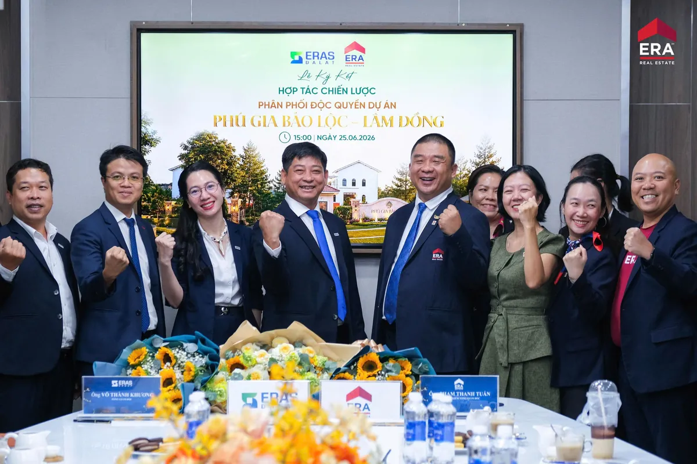
Kế thừa nền tảng của ERA Real Estate, thương hiệu môi giới bất động sản hình thành tại Mỹ từ năm 1971, ERA Vietnam phát triển mạng lưới hơn 2.700 chuyên viên tư vấn, cùng kinh nghiệm triển khai hơn 150 dự án sơ cấp và thứ cấp trên thị trường.
Hệ thống đào tạo ERA Academy cùng nền tảng công nghệ và dữ liệu giúp đội ngũ tư vấn duy trì quy trình chuyên nghiệp, minh bạch và nhất quán. ERA Vietnam là đơn vị phân phối độc quyền dự án Phú Gia Bảo Lộc, đồng hành cùng khách hàng từ lúc tìm hiểu đến khi chọn được tài sản phù hợp với mục tiêu an cư, second home (ngôi nhà thứ hai) hoặc tích sản dài hạn.
Đồng hành trọn hành trình
- Phân tích nhu cầu & khả năng tài chính
- Chọn sản phẩm phù hợp
- Cung cấp thông tin thị trường
- Đối chiếu pháp lý
- Xây dựng phương án thanh toán
- Hỗ trợ thủ tục giao dịch
Hình ảnh thực tế Phú Gia Bảo Lộc Phối cảnh là tương lai hướng đến – hình ảnh thực tế cho thấy dự án đang đi đến đâu
Khám phá bộ hình ảnh mới nhất của Khu biệt thự Phú Gia Bảo Lộc, từ cảnh quan, hạ tầng, tiện ích đến những không gian đang từng bước thành hình.
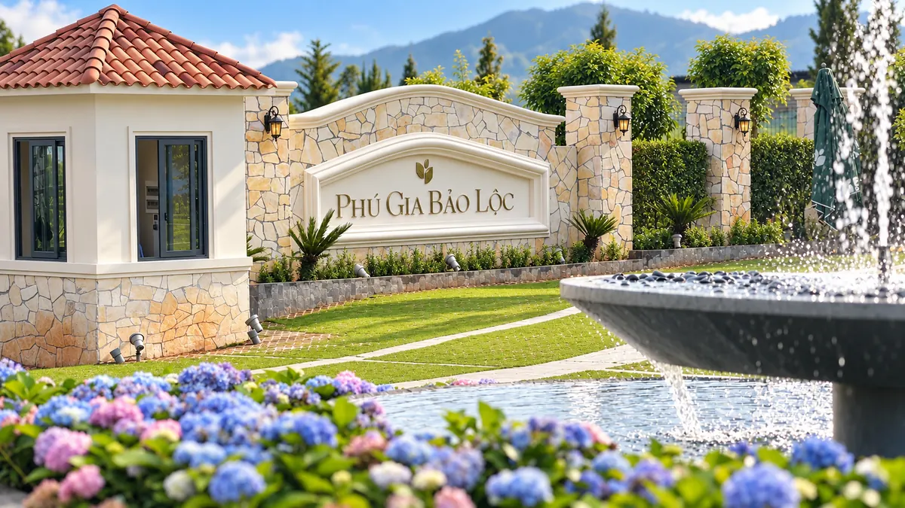
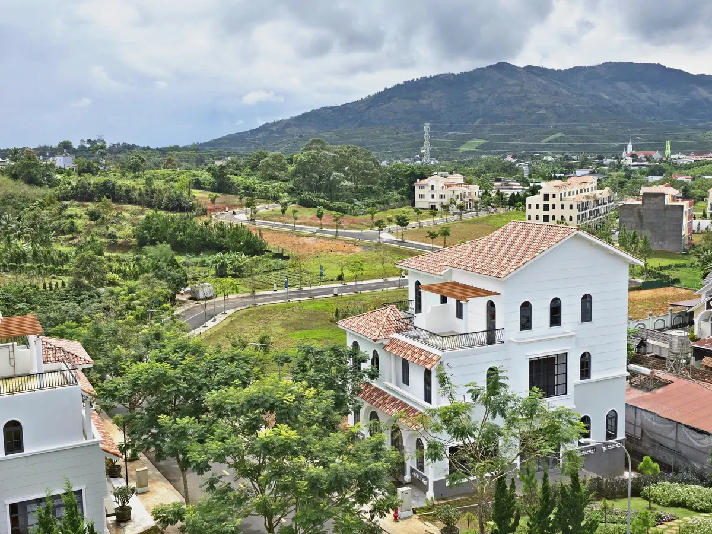
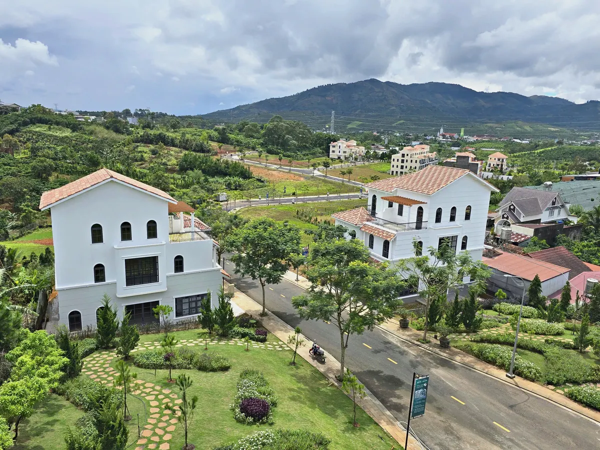
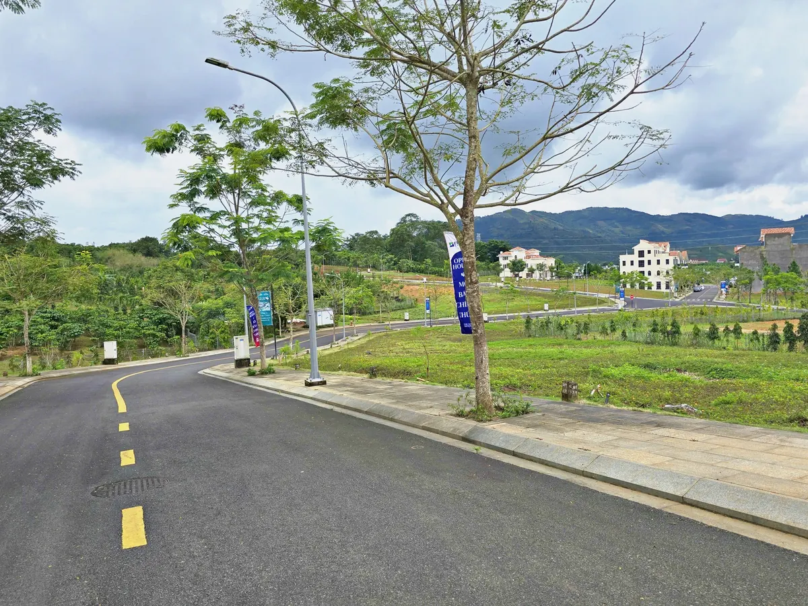
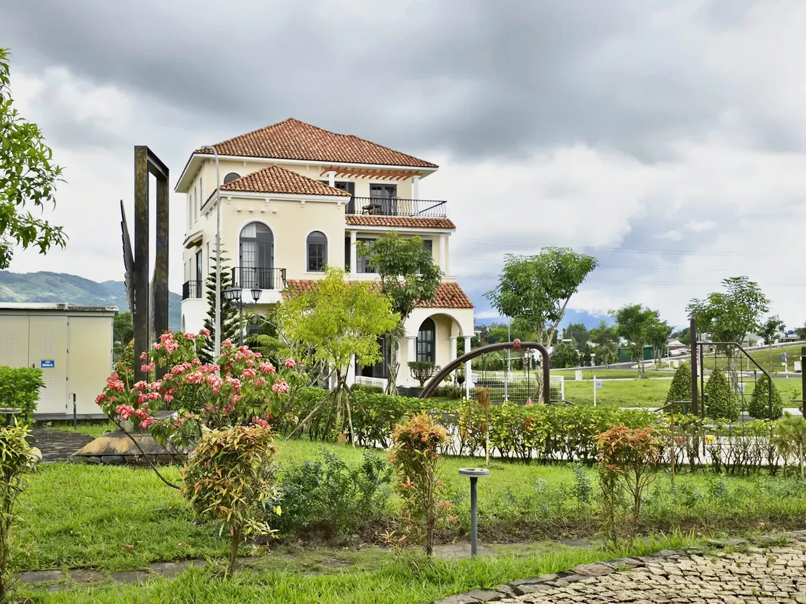
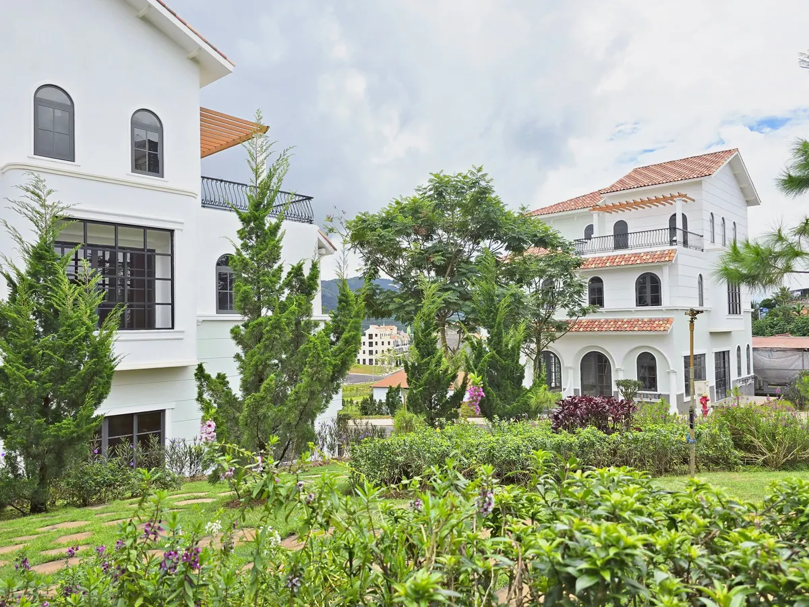
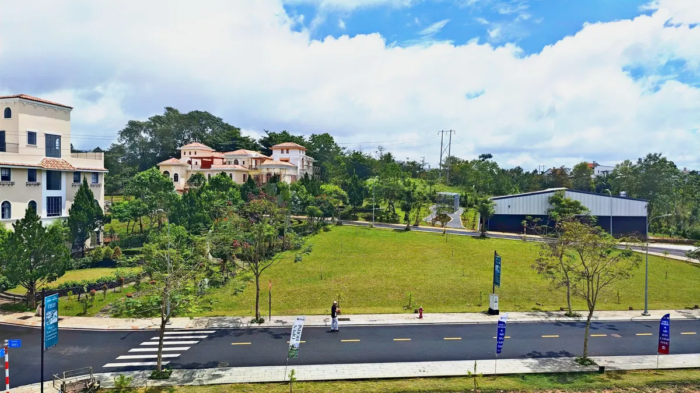
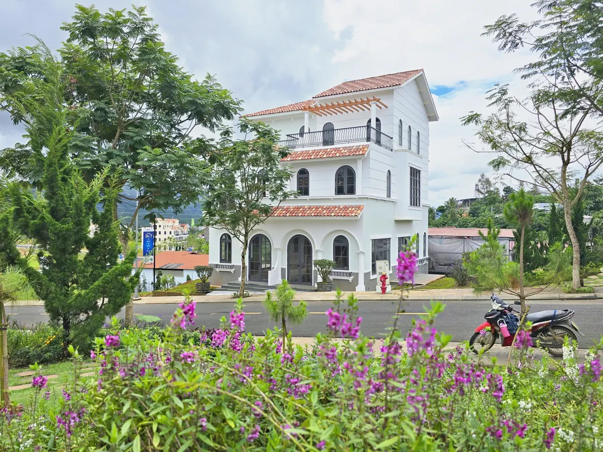
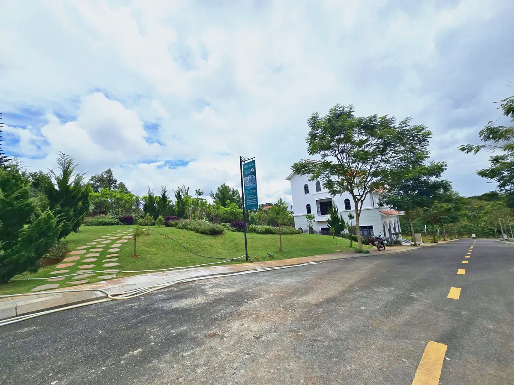
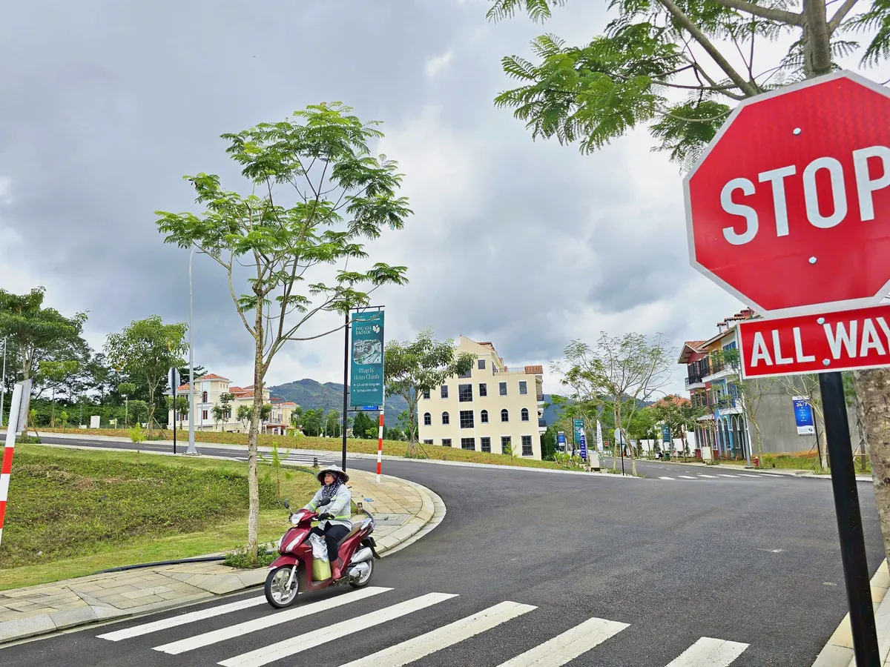
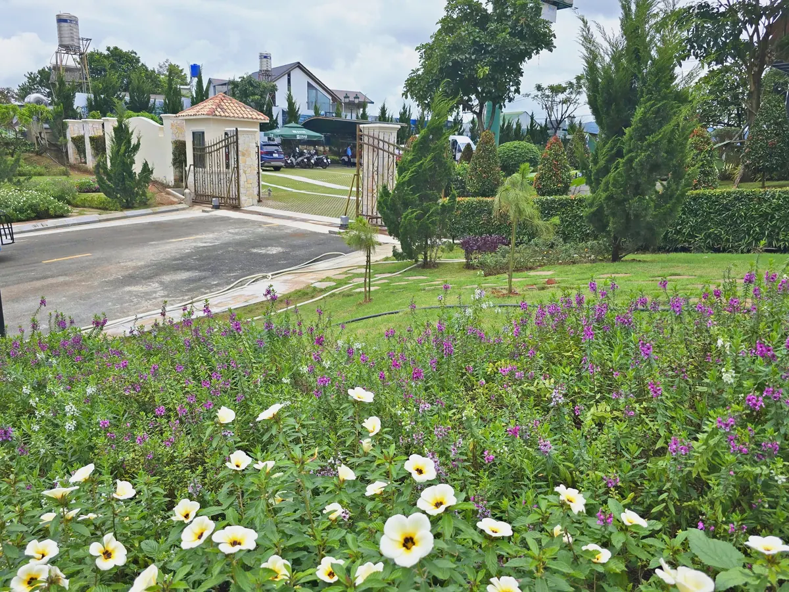
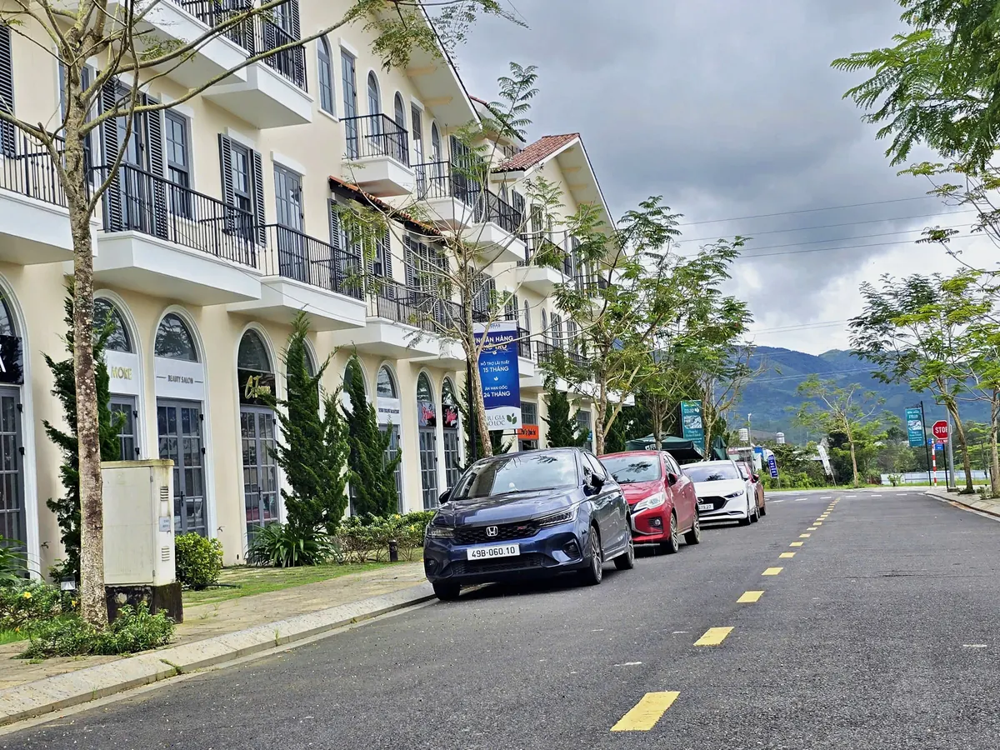
Trang 01 / 12
Dùng nút trước/sau hoặc vuốt ngang để lật trang. Bấm ảnh để phóng to. Ảnh chụp thực tế tại dự án; tiến độ được cập nhật theo từng giai đoạn.
Những điều nên biết trước khi đến dự án Phú Gia Bảo Lộc
Dự án Phú Gia Bảo Lộc ở đâu?
Dự án Phú Gia Bảo Lộc tọa lạc trên mặt tiền Quốc lộ 20, số 765 Trần Phú, Phường 3 Bảo Lộc, tỉnh Lâm Đồng, thuận tiện kết nối trung tâm thành phố và hành lang giao thông hướng TP.HCM, Đà Lạt.
Từ TP.HCM đến dự án Phú Gia Bảo Lộc mất bao lâu?
Khi hành lang cao tốc kết nối TP.HCM với Bảo Lộc hoàn thiện và đưa vào khai thác theo kế hoạch năm 2027, thời gian di chuyển được kỳ vọng rút xuống khoảng 2,5 giờ. Đây là thời gian dự kiến trong tương lai, không phải thời gian di chuyển hiện tại.
Giá bán Phú Gia Bảo Lộc hiện nay bao nhiêu?
Mức giá tham chiếu hiện tại của Phú Gia Bảo Lộc khoảng 26,5 triệu đồng/m². Giá cụ thể phụ thuộc diện tích, vị trí và giỏ hàng tại thời điểm lựa chọn.
Phú Gia Bảo Lộc có những sản phẩm nào?
Dự án gồm Liên kế 100 – 140 m², Song lập 140 – 200 m² và Đơn lập trên 200 m². Sản phẩm giao dịch là nền biệt thự để phát triển không gian ở theo quy hoạch và quy định của dự án.
Tiện ích Phú Gia Bảo Lộc có gì?
Dự án có 27 tiện ích tại hai phân khu Gia An và Phú Quý, từ cảnh quan, thể thao, vui chơi trẻ em, BBQ đến F&B, Cà phê Đôi Dép, chăm sóc sức khỏe, trạm sạc và an ninh 24/7.
Pháp lý Phú Gia Bảo Lộc như thế nào?
Dự án có quy hoạch chi tiết 1/500 và sổ riêng từng nền. Người mua nên kiểm tra hồ sơ pháp lý cụ thể của sản phẩm lựa chọn trước khi giao dịch.
Sổ hồng Phú Gia Bảo Lộc đã có chưa?
Theo dữ liệu dự án hiện hành, sản phẩm được xác lập sổ riêng từng nền. Khách hàng nên đối chiếu trực tiếp hồ sơ của sản phẩm trong giỏ hàng trước khi đặt cọc hoặc ký hợp đồng.
Phương thức thanh toán Phú Gia Bảo Lộc hiện nay thế nào?
Chính sách tháng 10/2026 gồm vốn tự có với tiến độ 15 tháng, vay ngân hàng giải ngân 65% hoặc thanh toán nhanh hưởng chiết khấu đến 10%. Phương án vay hiện được hỗ trợ lãi suất 0% và ân hạn gốc trong 24 tháng.
Có thể tham quan nhà mẫu Phú Gia Bảo Lộc không?
Khách hàng có thể đăng ký lịch tham quan để cập nhật tình trạng nhà mẫu, cảnh quan, tiện ích và tiến độ thực tế tại dự án.
Tiến độ Phú Gia Bảo Lộc 2026 hiện như thế nào?
Tiến độ được cập nhật theo từng giai đoạn. Khách hàng nên đối chiếu hình ảnh mới nhất và tham quan trực tiếp để đánh giá hạ tầng, cảnh quan, tiện ích và tiến độ thi công tại thời điểm thực tế.
Chủ đầu tư Phú Gia Bảo Lộc là ai?
Chủ đầu tư là Công ty Cổ phần Đầu tư Eras Đà Lạt, doanh nghiệp thành lập từ năm 2019, định hướng phát triển bất động sản tại thị trường Bảo Lộc. ERA Vietnam là đơn vị phân phối độc quyền dự án.
Đăng ký tham quan Phú Gia Bảo Lộc
Một lần đến để cảm nhận khí hậu cao nguyên, cảnh quan, tiện ích và nhà mẫu tại thời điểm thực tế.
- Giỏ hàng nền đang mở bán và giá chi tiết từng nền
- Bảng tính dòng tiền theo 3 phương thức thanh toán tháng 10/2026
- Lịch tham quan nhà mẫu, tiện ích và tiến độ hạ tầng
- Liên kế
- Song lập
- Đơn lập
Chuyên viên ERA gọi lại xác nhận lịch, đón anh/chị tham quan dự án.
Hoặc gọi ngay 094.1125.000